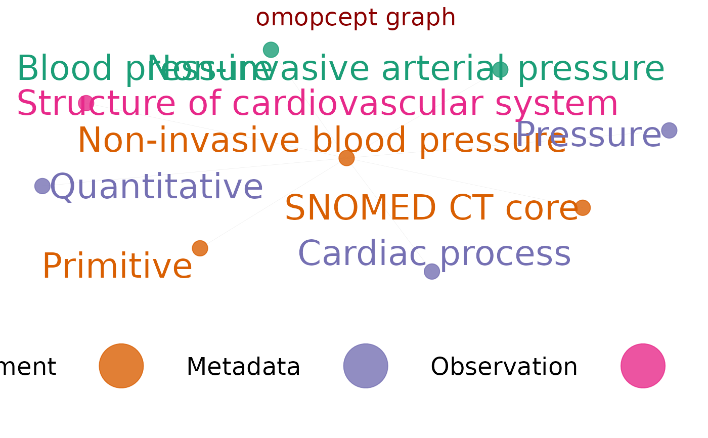

visualise graph of omop hierarchy called by omop_graph()
Usage
omop_graph_vis(
graphlist,
ggrlayout = "graphopt",
palettebrewer = "Dark2",
palettedirection = 1,
edgecolour = "grey71",
nodecolourvar = "domain_id",
textcolourvar = NULL,
nodealpha = 0.8,
edgealpha = 0.3,
edgewidth = 0.1,
nodesizevar = "connections",
nodesize = c(0, 6),
nodetxtvar = "name",
nodetxtangle = 0,
nodetxtsize = 9,
nodetxtnudgey = 0.3,
nodetxtnudgex = 0,
legendtxtsize = 18,
titletxtsize = 18,
titlejust = "centre",
legendshow = TRUE,
legendpos = "bottom",
legenddir = "horizontal",
legendcm = 3,
plot = TRUE,
saveplot = TRUE,
filetype = "pdf",
filenameroot = "omop_graph",
filenamecustom = NULL,
filepath = file.path("..//omopcept-plots"),
canvas = NULL,
width = 50,
height = 30,
units = "cm",
titlecolour = "darkred",
backcolour = "white",
graphtitle = "omopcept graph",
graphsubtitle = NULL,
caption = NULL,
captiontxtsize = 18,
captionjust = "left",
captioncolour = "black",
messages = TRUE
)Arguments
- graphlist
list of
edgesandnodescreated fromomop_graph_calc()- ggrlayout
ggraph layout, default = "graphopt", also "tree" works well, more directional
- palettebrewer
colour brewer palette, default='Dark2', other options e.g. 'Set1' see RColorBrewer::brewer.pal.info
- palettedirection
palette direction, default=1, -1 for reversed
- edgecolour
colour for lines joining nodes
- nodecolourvar
column to specify node colour, default="domain_id" other options "vocabulary_id" "concept_class_id" "standard_concept"
- textcolourvar
column to specify node text colour, default=NULL then set same as node_colour above. Other options "vocabulary_id" "concept_class_id" "standard_concept"
- nodealpha
node transparency, default 0.8
- edgealpha
edge transparency, default 0.3, #ggraph uses underscore edge_alpha but would mess up my consistency
- edgewidth
edge width, default 0.1, #ggraph uses underscore edge_width but would mess up my consistency
- nodesizevar
column to set node size, default="connections", uses num connections to a node
- nodesize
modify node size range, default c(0,6), will modify size whether nodesizevar used or not
- nodetxtvar
column to set node label, default="name"
- nodetxtangle
node text angle, default=0, 90 gives vertical text
- nodetxtsize
node text size, default=9
- nodetxtnudgey
nudge_y text relative to points, default 0.3
- nodetxtnudgex
nudge_x text relative to points, default 0
- legendtxtsize
text size for legend, default=20
- titletxtsize
text size for title, default=20
- titlejust
title justification, "left","right", default "centre"
- legendshow
whether to show legend, default TRUE
- legendpos
legend position, default 'bottom'
- legenddir
legen direction default = 'horizontal'
- legendcm
legend size cm, default=3
- plot
whether to display plot, default TRUE, note that large plots will not display well in R graphics window but do output well to pdf
- saveplot
whether to save plot, default TRUE, note that large plots will not display well in R graphics window but do output well to pdf
- filetype
output image file, default='pdf'
- filenameroot
optional root for an auto filename for plot (not used if filenamecustom is supplied)
- filenamecustom
optional filename for plot, otherwise default name is created
- filepath
where to save image file, default=file.path("..//omopcept-plots")
- canvas
some plot setups that override width,height,units "A4" "A4landscape" etc.
- width
plot width, default=50
- height
plot height, default=30
- units
plot size units default='cm'
- titlecolour
colour for main title, default='darkred'
- backcolour
colour for background
- graphtitle
optional title for graph, default NULL for none
- graphsubtitle
optional subtitle for graph, default NULL for none
- caption
optional text below plot, default=NULL
- captiontxtsize
caption text size default=18,
- captionjust
caption justification default="left",
- captioncolour
caption text colour default="black",
- messages
whether to print info messages, default=TRUE
Examples
#showing how nodesizevar can be set from any column
bp <- omop_relations("Non-invasive blood pressure")
#> recursively querying concept relations of: Non-invasive blood pressure - may take more than a few seconds
#> step 1 of 1
#> querying concept relations of: Non-invasive blood pressure - may take a few seconds
#> returning 8 concepts
nodesedges <- omop_graph_calc(bp)
nodesedges$nodes$testsizevar <- c(1:nrow(nodesedges$nodes))
omop_graph_vis(nodesedges, nodesizevar="testsizevar", nodesize = 5)
#> plot dims: w 50 h 30 u: cm
#> saved graph file as omop_graph-graphopt-p1Dark2-legbottom3-nts9-nta0-ndomain_id-bwhite-egrey71-50x30cm.pdf
